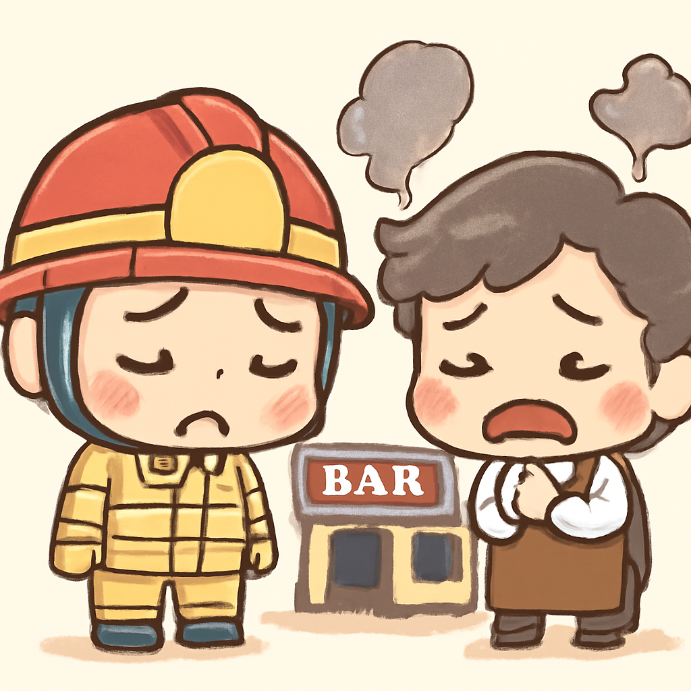
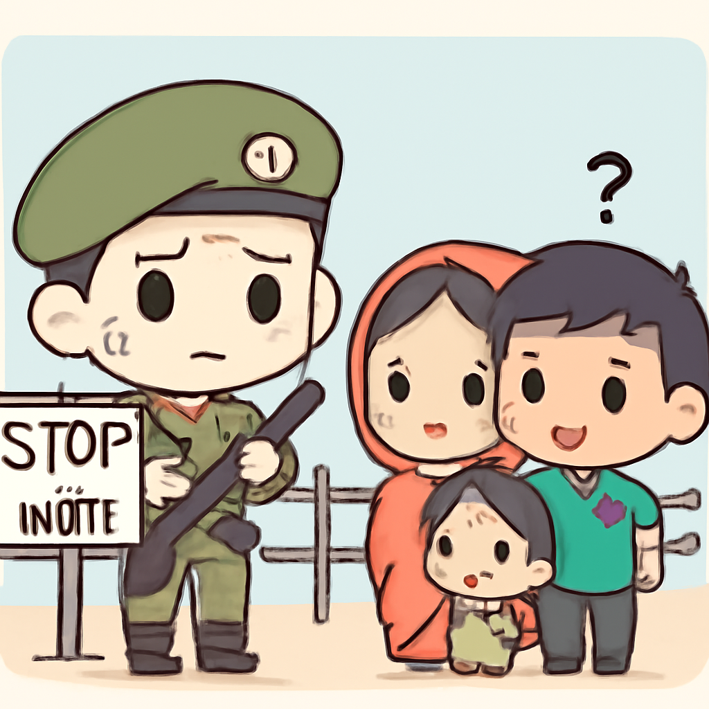

其一 · 美國霍爾木茲海峽 · 再次爆發美伊衝突
美國計畫恢復對伊朗港口封鎖，兩國關係緊張升級。
在美國霍爾木茲海峽，隨著美國計畫重新封鎖伊朗港口，兩國之間的衝突再次升級。美方指控伊朗攻擊兩艘油輪，伊朗則強烈反擊。這場對峙不僅影響供應鏈，甚至可能改變中東地區的政治格局。希望雙方能冷靜下來，別讓這場鬧劇演變成更大的戰爭。
🔗 原始新聞 ↗
2026-07-15 · 以古觀今，以笑抗愁
美國計畫恢復對伊朗港口封鎖，兩國關係緊張升級。
在美國霍爾木茲海峽，隨著美國計畫重新封鎖伊朗港口，兩國之間的衝突再次升級。美方指控伊朗攻擊兩艘油輪，伊朗則強烈反擊。這場對峙不僅影響供應鏈，甚至可能改變中東地區的政治格局。希望雙方能冷靜下來，別讓這場鬧劇演變成更大的戰爭。
🔗 原始新聞 ↗
以色列空襲北加沙，造成多名哈馬斯警察死亡。
在以色列加沙的空襲中，七人喪生，其中包括一名哈馬斯的高層警官。以軍表示這次攻擊是針對「恐怖分子」的行動，但許多人對此表示關切。這場衝突的背後是長期的政治鬥爭和人道危機，讓人不禁希望和平能早日來臨，否則這場悲劇會無止盡。
🔗 原始新聞 ↗
曼谷酒吧發生火災，造成30人喪生，事故引發安全問題討論。

在泰國曼谷的一間酒吧發生火災，導致30人喪生。調查發現，現場有鎖住的門和易燃裝潢，讓人不禁質疑安全措施是否到位。這起悲劇提醒我們，無論是在哪裡，安全永遠是首位。希望未來能改善這些問題，讓夜生活更安全。
🔗 原始新聞 ↗
中國高官馬興瑞因貪腐和性醜聞被清除，震撼政壇。
在中國，北京的政壇震撼，前高官馬興瑞因貪腐及性醜聞被清除。這位曾經在新疆任職的官員，成為第三位自2022年以來被清除的政治局成員。這一事件再次顯示出中國政府對貪腐的零容忍政策，但也引發了對政治透明度的討論。希望這不只是清洗，而是真正的改革。
🔗 原始新聞 ↗
印度驅逐孟加拉移民，兩國邊界緊張局勢加劇。

在印度與孟加拉的邊界上，印度開始驅逐所謂非法移民，導致數千人被困。這一行動引發了兩國之間的緊張局勢升高，許多人擔心人道問題和地區穩定。這不僅是政治問題，也涉及到人權，希望雙方能找到和平解決的方法，不要讓人們成為政治博弈的犧牲品。
🔗 原始新聞 ↗